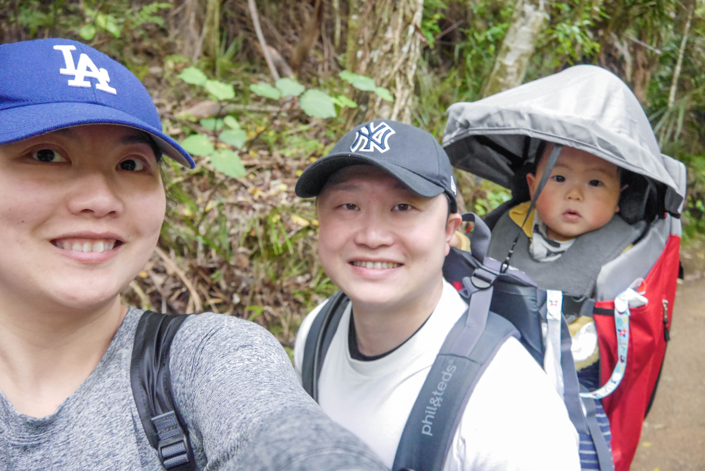
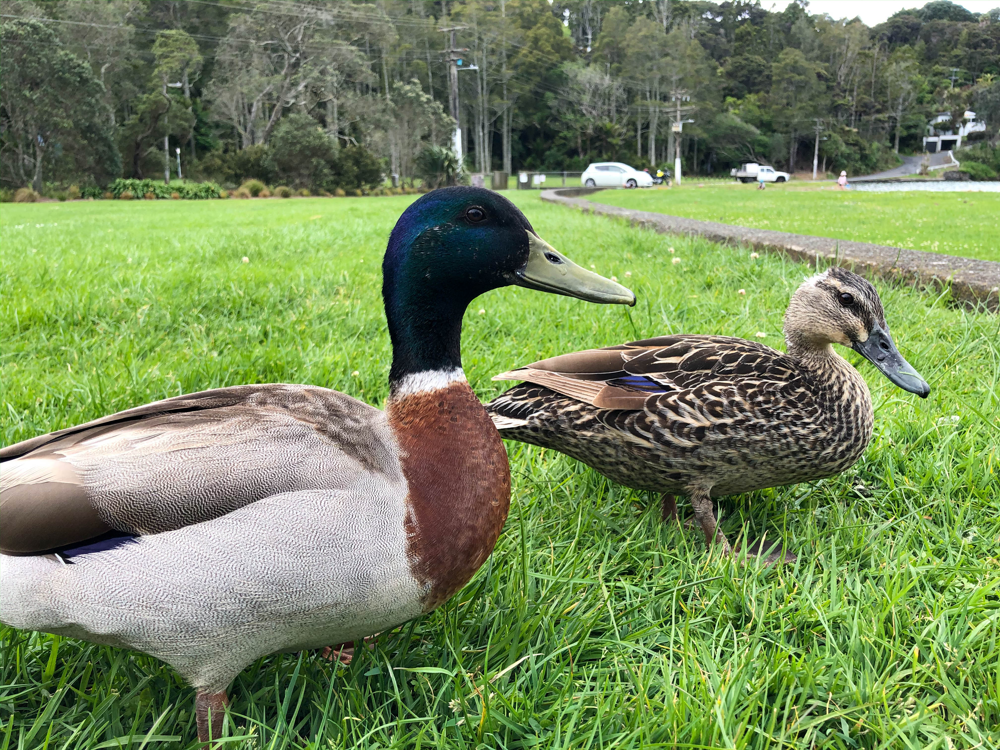

Ryker's visit
To ZigZag Track Titirangi
Weekend tracking starts again!
This time we visited the short ZigZag track in Titirangi, west of Auckland.
It was an easy track and I also made some friends by the waterfront!

My family loves the west, so we decide to visit another track on the west side of Auckland, near Titirangi town. It is a short 30 minutes track, covered by forestes and end at Titirangi beach.  It is called ZigZag track for a reason though, the track zigzags down hill until we reach the beach, I think we will have a hard time coming back to the car.
We arrived at the beach to have lunch, then we met a duck couple wanting to play with us.
They were also fighting other duckies which I found super amusing.

I had alot of rice and shared my food with the duckies. They were very happy and I think we became friends afterwards.
As I expected, daddy and mummy got very tired when heading back to the car, it was all up hill walk! They had to stop for a break before we end the trip and I enjoy those moments looking at them relax.
My Weekend is almost over, I am sure my next hike will be more exciting.